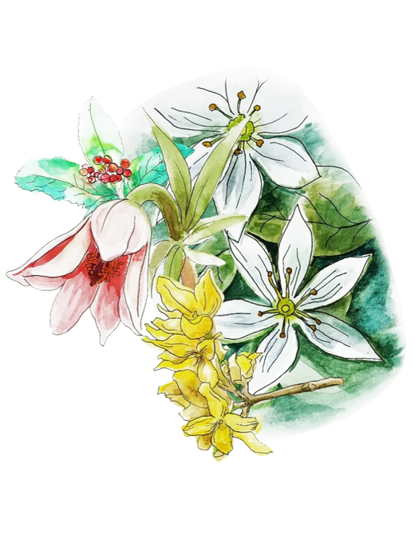
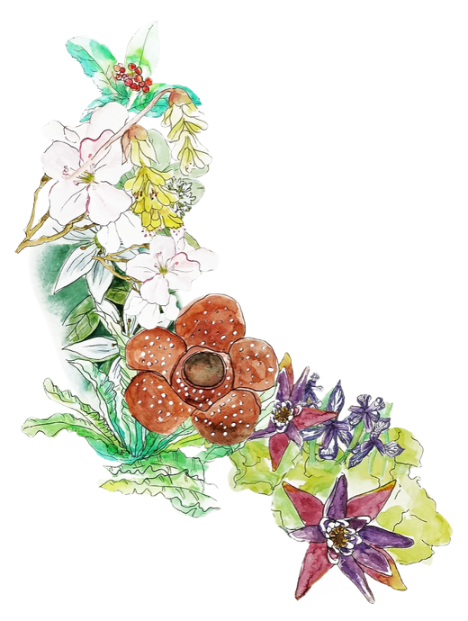
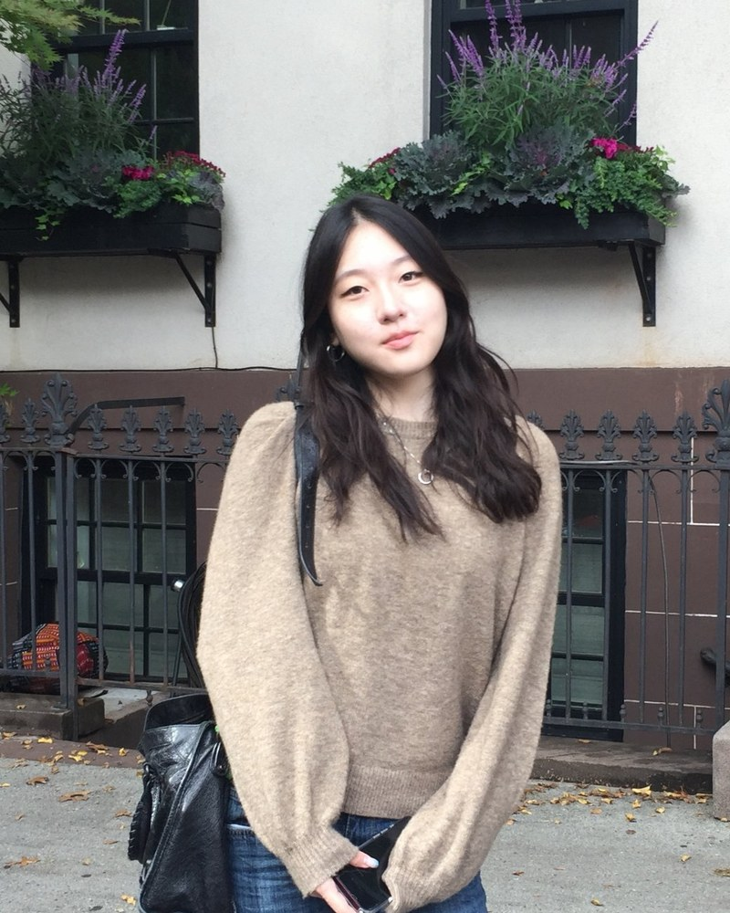
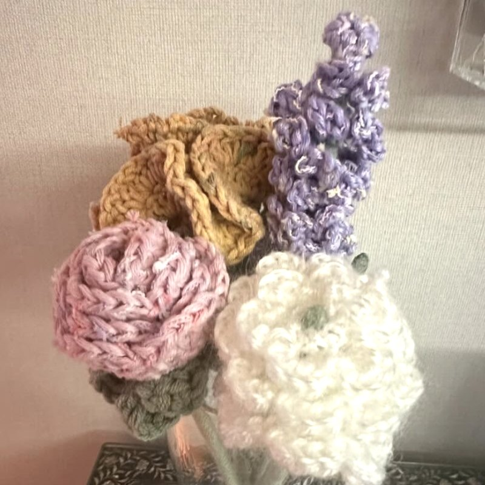
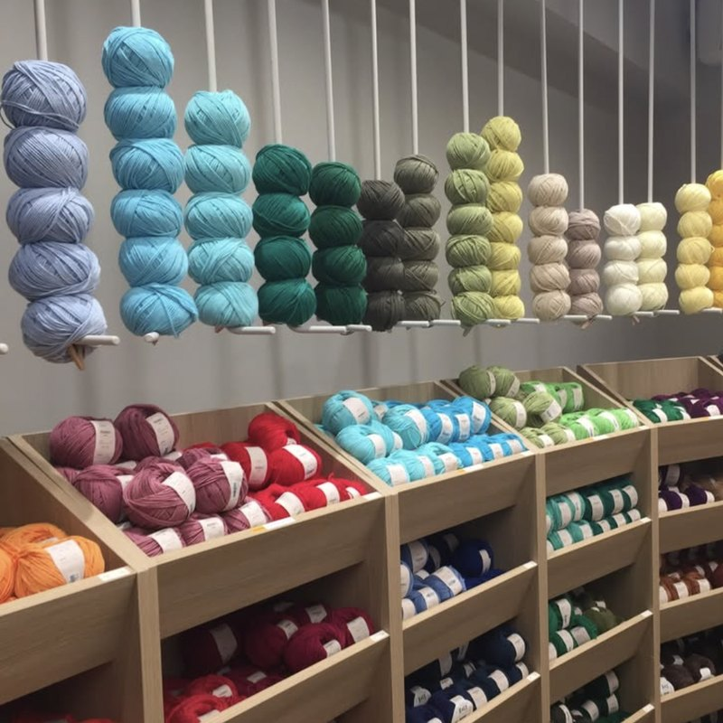
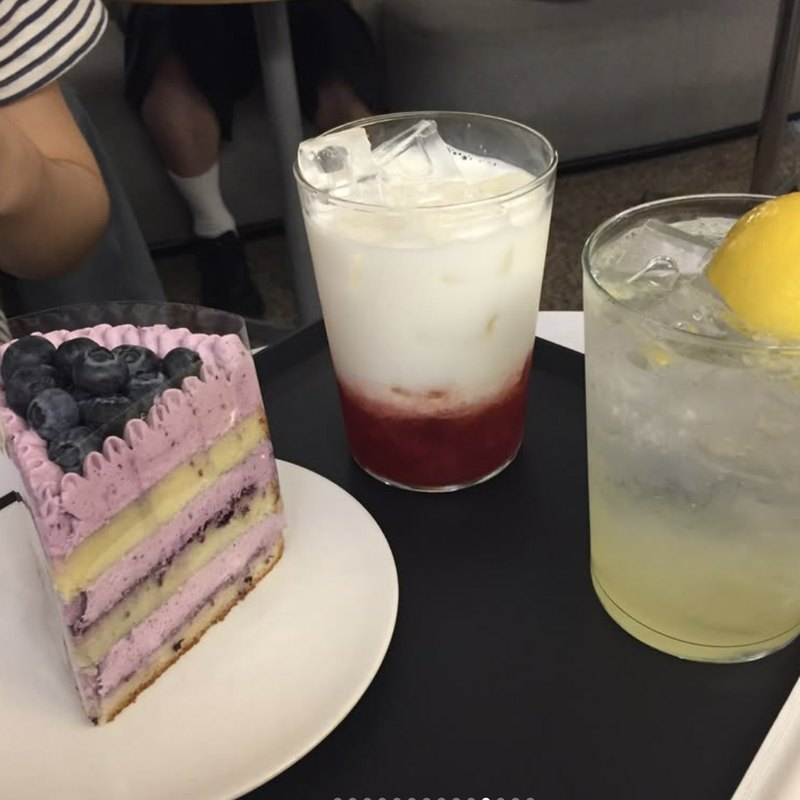
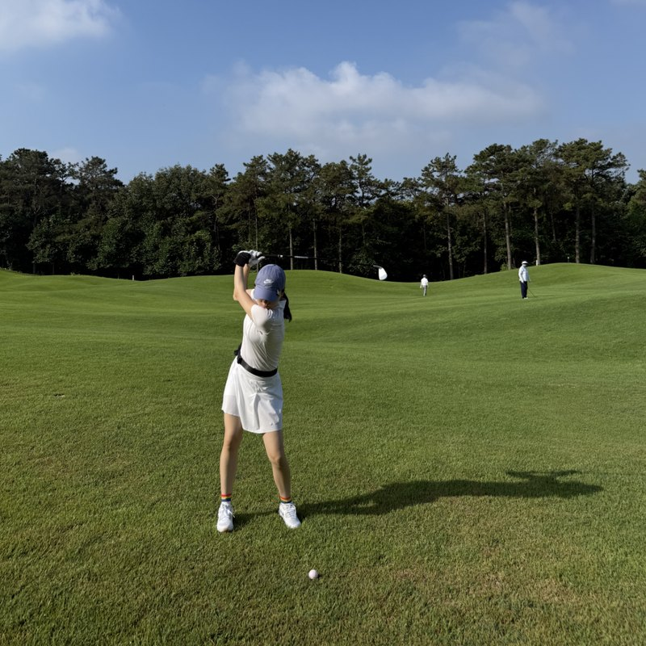

fashion design & management
Merchandising · Buying · Retail strategy
Cornell Fashion Design & Management student with a minor in Data Science and Real Estate, focused on the business side of fashion.
see my experience →
Merchandising, operations, marketing and creative direction: the business side of fashion, from the showroom floor to the runway.
Merchandising Intern
Show Operations Chair
Marketing Graphic Designer
Creative & Fashion Direction
Teaching Assistant
Ambassador & Steering Committee
Brand, trend and product projects, each framed around the customer, the assortment and the business decisions behind it. Click a project to see the full case.


Hi, I'm Chloe!
I'm a Fashion Design and Management student at Cornell University, with a minor in Data Science and Real Estate. I'm passionate about the intersection of fashion, business, and creativity, particularly how thoughtful design and strategic decision-making come together to shape the fashion industry.
Through my experiences in merchandising, creative direction, marketing, and fashion show operations, I've developed an interest in the business side of fashion, especially buying, merchandising, and retail strategy.
I love exploring new ideas, collaborating with others, and finding ways to bring both creativity and analytical thinking into my work. Outside of fashion, you'll probably find me café hopping, crocheting, golfing, or keeping up with Formula 1!
what I'm doing when I'm not in the studio


I crochet flowers and small pieces, and I can lose an hour in a yarn shop just looking at color.

Always finding a new café, usually picked for the cake.

Out on the course whenever the weather's good.
get in touch